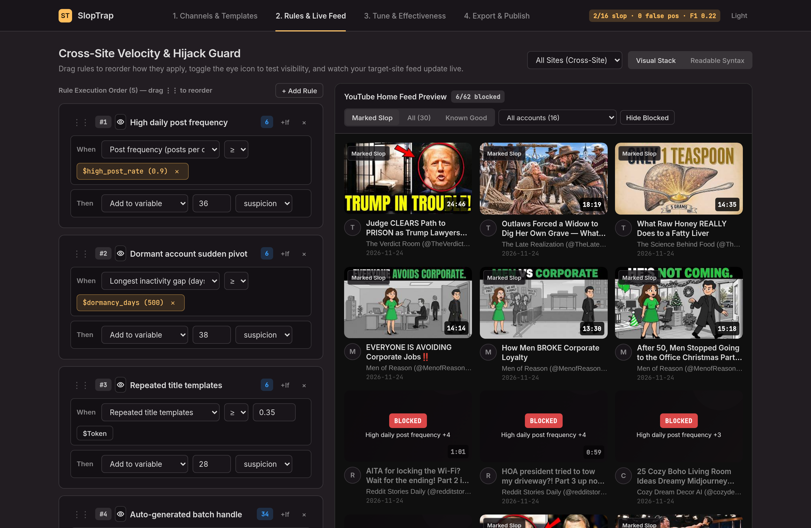

Build, test, and share cross-site slop rules in a clean visual studio
SlopTrap is a Svelte 5 + Tauri v2 rule definition app (runnable in any browser or as a native desktop app) paired with a sandboxed WebAssembly (.strule) runtime. Write or click together rules using a common cross-site language (post.frequency, account.dormancy_days, text.formal_prose), accumulate shared variables across rules, check them against thresholds, and export signed WASM bundles for YouTube, TikTok, Pinterest, and custom sites.
token high_post_rate = 0.9
token block_cutoff = 60
var suspicion = 0
rule "High daily post frequency"
when post.frequency >= $high_post_rate ramp 1.5
then add 36 to suspicion
decide "Block high-suspicion accounts"
when suspicion >= $block_cutoff
then block
Common cross-site language
syntaxUnified signals such as post.frequency, account.dormancy_days, and post.title_reuse work identically across YouTube, TikTok, Pinterest, and custom site adapters.
Shared variables & actions
variablesTriggered rules can add or set values on shared variables (e.g. suspicion, script_risk, voice_risk) that are checked against thresholds to block, hide, dim, or warn.
Known slop & good sets
AiSListLoad specified sets of Known Slop (including YouTube channels from AiSList) and Known Good accounts to measure recall, false positives, and F1 live.
Value & phrase tokenization
$tokensPromote any threshold, variable weight, or phrase list into a named $token so sliders recompile WASM and re-score all test accounts in microseconds.
Browser + Tauri v2 desktop
svelte 5Run zero-install in the browser or launch the native Tauri v2 desktop app (npm run tauri dev) with built-in Rust live account URL inspection.
Signed WebAssembly bundles
v2Zero-import WebAssembly 1.0 rules in sloptrap-bundle-v2 files: an Ed25519 signature over the whole manifest and the module hash, a static WASM audit, and a fuel- and memory-bounded sandbox. Only maintainer-signed Official rules count as verified.
| # | Rule | Tier | Band / F1 | Active (30d) | All-Time | Overhead | Artifact |
|---|---|---|---|---|---|---|---|
| Loading leaderboard… | |||||||
YouTube TUI Subsection — sloptrap-tube-tui
Example YouTube App
Terminal forensic inspector, autonomous discovery crawler, and Go SDK (sloptrap/sloptrap-tube-tui) evaluating Studio-compiled .strule bundles against live YouTube channels.